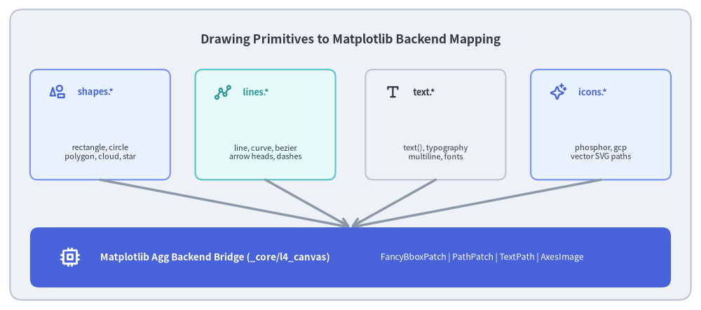
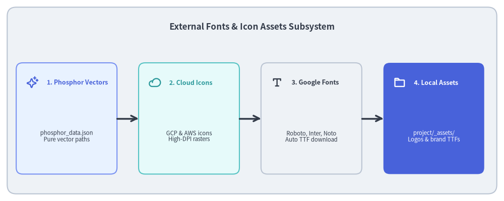

Drawing Primitives & Graphics Backends
Drawlib provides a comprehensive suite of declarative drawing primitives (drawlib.shapes, lines, text, images, icons). Rather than requiring users to construct complex object-oriented scene graphs or manipulate raw canvas contexts, Drawlib exposes functional, declarative drawing commands with center-anchored geometry.
This document details the mapping between public drawing primitives and the underlying Matplotlib backend, font discovery, and icon vector engines.

Source Code
from drawlib.canvas import save, setup
from drawlib.icons import phosphor
from drawlib.lines import line
from drawlib.shapes import rectangle
from drawlib.styles import Styles
from drawlib.text import text
setup(width=140, height=62)
rectangle((70, 31), width=136, height=58, style=Styles.Neutral.patch(shape_r=2.5))
text(
(70, 54),
"Drawing Primitives to Matplotlib Backend Mapping",
style=Styles.DarkBold.patch(text_size=12.5),
)
# 4 Primitive Categories on Top
primitives = [
(20, "shapes.*", "rectangle, circle\npolygon, cloud, star", phosphor.shapes, Styles.PrimaryNeutral, Styles.PrimaryBold),
(53, "lines.*", "line, curve, bezier\narrow heads, dashes", phosphor.line_segments, Styles.SecondaryNeutral, Styles.SecondaryBold),
(87, "text.*", "text(), typography\nmultiline, fonts", phosphor.text_t, Styles.Neutral, Styles.DarkBold),
(120, "icons.*", "phosphor, gcp\nvector SVG paths", phosphor.sparkle, Styles.PrimaryNeutral, Styles.PrimaryBold),
]
for x, title, desc, icon_func, card_style, icon_style in primitives:
rectangle((x, 37), width=28, height=22, style=card_style.patch(shape_r=1.5))
icon_func((x - 8.5, 43.5), width=3.4, style=icon_style)
text((x - 4.5, 43.5), title, style=icon_style.patch(halign="left", text_size=9.2))
text((x, 31.5), desc, style=Styles.Dark.patch(text_size=8.0))
line((x, 26), (70, 16.5), arrow_head="->", style=Styles.MutedBold)
# Matplotlib Backend Bridge at Bottom
rectangle((70, 10.5), width=128, height=12, style=Styles.PrimaryFlat.patch(shape_r=1.8))
phosphor.cpu((14, 10.5), width=4.2, style=Styles.WhiteBold)
text((20, 10.5), "Matplotlib Agg Backend Bridge (_core/l4_canvas)", style=Styles.WhiteBold.patch(halign="left", text_size=9.8))
text((76, 10.5), "FancyBboxPatch | PathPatch | TextPath | AxesImage", style=Styles.White.patch(halign="left", text_size=8.8))
save()
1. Concept: Functional Ergonomics over OOP Ceremony
Many graphics libraries require verbose object lifecycles:
# Traditional verbose OOP graphics (anti-pattern)
rect = Rectangle(Point(10, 20), Width(40), Height(20))
rect.setFill(Color.BLUE)
canvas.addShape(rect)
canvas.render()
Drawlib adopts a clean functional, declarative API:
# Drawlib declarative primitive
rectangle((30, 30), width=40, height=20, style=Styles.PrimaryFlat, text="Service")
- Coordinates describe the shape directly in Cartesian space.
- Shape creation, styling, border styling, label text placement, and font sizing are achieved in a single cohesive function call.
- Text labels embedded within shapes automatically compute vertical and horizontal alignment offsets.
2. Positioning: Primitive Subsystems
The primitives layer sits directly between _core/l4_canvas and the higher-level domain components:
drawlib.shapes(23 Primitives):- Basic:
rectangle(),circle(),ellipse(),donut(),wedge(). - Polygons:
regular_polygon(),polygon(),star(),trapezoid(),parallelogram(). - Domain Callouts:
cloud(),speech_bubble(),cylinder(),cube(). - Backend translation: Converted to Matplotlib
PathPatchvia cubic Bezier spline approximation.
- Basic:
drawlib.lines:line(),lines(),curve(),bezier().- Supports stroke styles (
solid,dashed,dotted), line caps, and directional arrowheads (->,<-,<->,|-|).
drawlib.text:- TrueType typography rendering with automatic font discovery (
FontFile, Google Fonts cache). - Handles line breaks, vertical and horizontal anchor alignments, and bounding box measurement.
- TrueType typography rendering with automatic font discovery (
drawlib.icons&images:- Phosphor vector icons and Google Cloud Platform architecture icons.
- Bitmap image placement with automatic aspect-ratio preservation.

Source Code
from drawlib.canvas import save, setup
from drawlib.icons import phosphor
from drawlib.lines import line
from drawlib.shapes import rectangle
from drawlib.styles import Styles
from drawlib.text import text
setup(width=140, height=56)
rectangle((70, 28), width=136, height=52, style=Styles.Neutral.patch(shape_r=2.5))
text(
(70, 48.5),
"External Fonts & Icon Assets Subsystem",
style=Styles.DarkBold.patch(text_size=12.2),
)
cards = [
(18.5, "1. Phosphor Vectors", "phosphor_data.json\nPure vector paths", phosphor.sparkle, Styles.PrimaryNeutral, Styles.PrimaryBold),
(52.5, "2. Cloud Icons", "GCP & AWS icons\nHigh-DPI rasters", phosphor.cloud, Styles.SecondaryNeutral, Styles.SecondaryBold),
(86.5, "3. Google Fonts", "Roboto, Inter, Noto\nAuto TTF download", phosphor.text_t, Styles.Neutral, Styles.DarkBold),
(120.5, "4. Local Assets", "project/_assets/\nLogos & brand TTFs", phosphor.folder, Styles.PrimaryFlat, Styles.WhiteBold),
]
for x, title, desc, icon_func, card_style, icon_style in cards:
rectangle((x, 23), width=28, height=31, style=card_style.patch(shape_r=1.8))
icon_func((x - 9.5, 33), width=3.4, style=icon_style)
text((x - 5.5, 33), title, style=icon_style.patch(halign="left", text_size=9.0))
sub_style = Styles.White if card_style == Styles.PrimaryFlat else Styles.Dark
text((x, 18), desc, style=sub_style.patch(text_size=8.2))
for i in range(3):
x_from = cards[i][0] + 14.0
x_to = cards[i + 1][0] - 14.0
line((x_from, 23), (x_to, 23), arrow_head="->", style=Styles.DarkBold)
save()
3. Details: Geometry Calculation & Asset Compilation
3.1. Corner Radius & Path Generation
Rounded rectangles in Drawlib do not simply clip a raster buffer. Instead, _core/l3_math computes exact quarter-circle cubic Bezier arcs:
- The parameter
shape_rdefines the corner radius in virtual canvas units. - Straight edge segments connect the tangent endpoints of the four corner arcs, generating a closed Matplotlib
matplotlib.path.Path.
3.2. Vector Icon Code Generation (./dcli codegen)
Drawlib embeds over 1,200 Phosphor vector icons directly into the library:
- Raw SVG path definitions are compiled from
phosphor_data.jsoninto optimized Python methods via./dcli codegen icon-phosphor. - Because paths are pure vector mathematics, Phosphor icons scale infinitely without pixelation or artifacting in PDF exports.
3.3. Font File Discovery & Caching
When a diagram requests a font family:
_core/l3_fontschecks the local project directory (_assets/*.ttf).- If not found locally, it checks the pre-downloaded user cache directory (
~/.cache/drawlib/fonts/). - If still missing, Drawlib fetches the open-source TrueType font from Google Fonts and caches it locally.
Next, explore how these primitives compose into High-Level Components.